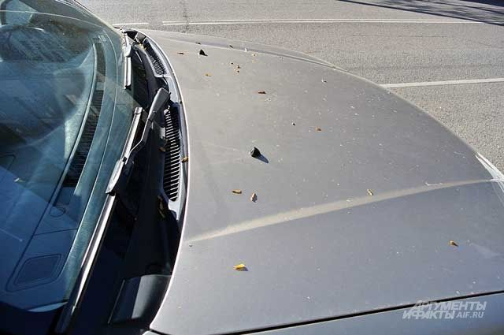
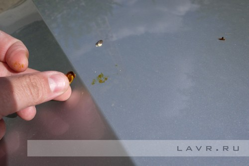

Казалось бы, это маленькая неприятность. Однако тополиные почки, прилепившиеся к кузову машины, портят общее впечатление от автомобиля.
Удаление следов от клейких тополиных почек является трудным занятием, если вы занимаетесь им самостоятельно. Растительная смола очень быстро и глубоко внедряется в краску и за неделю проникает даже в двухслойные эмали, делая удаление крайне сложным.
Перед удалением растительной смолы с кузова автомобиля в автокомплексе специалисты тщательно моют и вытирают кузов, так как в процессе удаления следов тополя крошечные частицы пыли на поверхности машины могут стать причиной возникновения матовых пятен.
После этого специальное средство наносится на чистящую салфетку и накладывается на места загрязнения. Чем более давний срок у пятен, тем больше вероятность, что операцию потребуется провести несколько раз, слой за слоем.
Наномойка Антидождь Инновационный автошампунь Полировка «Жидкое стекло»